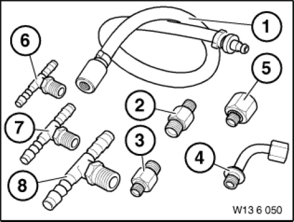

13 6 050 Adapter
13 6 050 Adapter
0491340
Minimum set: Mechanical tools
MW

NOTE: (adapter set for BMW DIS) For measuring oil and fuel pressures
Storage Location: A3
A4
SI number: 01 12 94 (859)
Consisting of:
4 = 0495067 T-piece
NOTE: (T-piece) T-piece for line dia. 12 mm
1 = 0491341 Hose
NOTE: (Connecting hose) For connecting reducers 13 6 052, 13 6 053, 13 6 55 and adapters 11 4 050, 11 4 160, 11 4 170, 13 5 131 to BMW DIS
2 = 0491342 Adapter
NOTE: (Adapter) For pipe bends 24 0 023, 24 0 024, 24 0 140
3 = 0491343 Adapter
NOTE: (Adapter) Reducer for adapter 16 1 300
4 = 0491344 Adapter
NOTE: (Adapter)
5 = 0491345 T-piece
NOTE: (T-piece) Reducer for T-pieces 13 6 056 and 13 6 057
6 = 0491346 T-piece
NOTE: (T-piece) T-piece for line dia. 6 mm
7 = 0491347 T-piece
NOTE: (T-piece) T-piece for line dia. 8 Mm